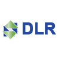
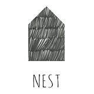

Ondersteuning van beginnende of vastzittende startups in concept, structuur en ontwikkelproces.
Kan jullie startup wat meer flow gebruiken?
Vind hier de ondersteuning in brainstorm-sessies, én de tools voor een lean technisch team.
De belangrijkste tools: stift en papier, post-its, de scrum bijbel, trello, github.
Bel op +31 6 57 157 653 of schrijf hier een berichtje.
De tafel gevuld met papier, stiften & post-its. Een brainstorm-avond met het hele team over concept, product en bedrijf.
We gaan (terug) naar de kernwaardes van het bedrijf en vanuit daar naar wat het product dan moet doen. Dit helpt niet alleen met de structuur het product, maar brengt ook focus in het bedrijf.
Check It! is een tool die automatisch een testomgeving maakt voor elke feature of bugfix in ontwikkeling.
Als klein technisch team maken jullie al vele nieuwe functionaliteiten per dag. De product owner kan met Check It eenvoudig meekijken, er doorheen klikken, en goedkeuring geven voor het live zetten.
Uit ervaring met tig startups is een een set van hulpmiddelen ontstaan. Tools om snel prototypes maken en te gebruiken in productie.
Snel omdat het simpel is. En omdat het je vrij laat in wat je wil. Geen strak framework als keurslijf. Code waarmee je eenvoudig een pivot kan maken!
Snel een API-server opzetten met de structuur van de jsonapi IANA standaard.
Een eenvoudig, uitbreidbaar en snel framework dat niets afdwingt maar helpt.

